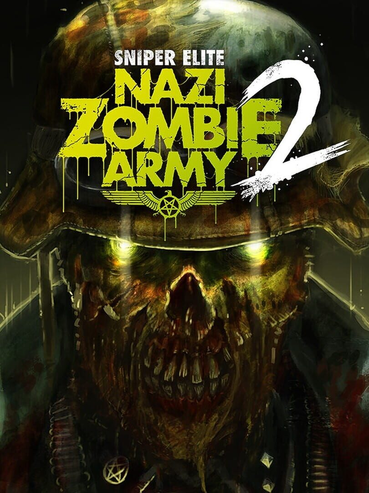

Sniper Elite: Nazi Zombie Army 2
Sniper Elite: Nazi Zombie Army 2
Details
|  | |
| Spielzeit | Nicht gespielt |
| Letzte Aktivität | Nie |
| Hinzugefügt | 27.04.2022 23:20:04 |
| Modifiziert | 12.12.2022 0:48:01 |
| Fertigstellungsstatus | Not Played |
| Bibliothek | Steam |
| Quelle | Steam |
| Plattform | PC (Windows) |
| Veröffentlichungsdatum | 31.10.2013 |
| Community Bewertungen | 82 |
| Kritiker Punkte | 53 |
| Benutzerwertung | |
| Genre | Action Adventure |
| Entwickler | Rebellion Developments |
| Verleger | Rebellion |
| Eigenschaft | Achievements Cloud Saves Controller Support Co-op Leaderboards Multiplayer Single Player Steam Karten |
| Links | Communityhub Diskussionen Guides Neuigkeiten Shopseite PCGamingWiki Errungenschaften |
| Tag | Action Adventure Bullet Time Co-Op FPS Gore Horror Multiplayer Online Co-Op Shooter Single Player Sniper Stealth Strategy Survival Survival Horror Third Person Third-Person Shooter World War II Zombies |
Beschreibung
** Please note: a remastered and improved edition of this game is now available in Zombie Army Trilogy.**
Experience a terrifyingly intense co-op campaign for up to four players in this gut-wrenching sequel to Steam best-seller, Sniper Elite: Nazi Zombie Army.
With World War 2 Europe overrun by legions of the undead, you must find mankind’s salvation deep in the twisted bowels of Berlin by securing the sacred artefacts that unleashed this damnation. Every step must be paid in blood as players work together against impossible odds and descend further into the demon-infested city and the terrifying Führerbunker itself.
Tackle the campaign online in co-op for up to four players, or embark on the twisted missions alone if you’ve got the bottle.
Featuring new enemies, new environments, blood curdling surprises and the return of the infamous X-ray kill cam, Sniper Elite: Nazi Zombie Army 2 will satisfy even the most bloodthirsty of zombie hunters.
New campaign. New terrors
Nerve-shredding third-person combat
More thrills. More blood spilled
Experience a terrifyingly intense co-op campaign for up to four players in this gut-wrenching sequel to Steam best-seller, Sniper Elite: Nazi Zombie Army.
With World War 2 Europe overrun by legions of the undead, you must find mankind’s salvation deep in the twisted bowels of Berlin by securing the sacred artefacts that unleashed this damnation. Every step must be paid in blood as players work together against impossible odds and descend further into the demon-infested city and the terrifying Führerbunker itself.
Tackle the campaign online in co-op for up to four players, or embark on the twisted missions alone if you’ve got the bottle.
Featuring new enemies, new environments, blood curdling surprises and the return of the infamous X-ray kill cam, Sniper Elite: Nazi Zombie Army 2 will satisfy even the most bloodthirsty of zombie hunters.
Key Features
New campaign. New terrors
- Survive an all new stand-alone campaign for up to four players.
- Endure increasingly hellish new locations and oppressive environments.
- Confront blood-chilling new enemies including the Fire Demon, and Summoner.
Nerve-shredding third-person combat
- Experience the trademark sniping, blood-pumping sieges and co-op team play that made the original Nazi Zombie Army a Steam best-seller.
- Revel in the return of the infamous X-ray kill cam as your bullets purify the putrid insides of the undead in slow motion.
- Defy the odds and survive against overwhelming hordes with traps, explosives and powerful new machine-gun turrets.
More thrills. More blood spilled
- Recoil at grotesque new enemies, effects and tense new cinematics.
- Savour the all-new Carpenter-esque soundtrack inspired by slasher-horror cinema.
Notes
- This is a stand alone game. It does not require Sniper Elite V2 or Sniper Elite: Nazi Zombie Army to play!
- Steam keys will not activate in Germany